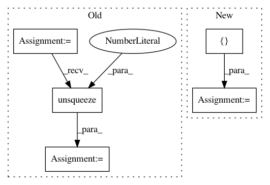

a7a12d157766b69cf4b1ddbb5fcdacfe485dc6fa,test/kernels/test_matern_kernel.py,TestMaternKernel,test_ard_separate_batch,#TestMaternKernel#,117
Before Change
// batch_dims + diag
res = kernel(a, b, batch_dims=(0, 2)).diag()
actual = torch.cat([actual[i].diag().unsqueeze(0) for i in range(actual.size(0))])
self.assertLess(torch.norm(res - actual), 1e-5)
if __name__ == "__main__":
After Change
[
[[[0.0, 0.0], [1.0, 1.0]], [[0.0, 0.0], [0.0, 0.0]]],
[[[1.0, 1.0], [0.0, 0.0]], [[0.0, 0.0], [0.0, 0.0]]],
[[[0.0, 0.0], [0.0, 0.0]], [[4.0, 4.0], [0.0, 0.0]]],
]
)
dist.mul_(math.sqrt(5))
dist = dist.view(3, 2, 2, 2)
actual = (dist ** 2 / 3 + dist + 1).mul(torch.exp(-dist))
res = kernel(a, b, batch_dims=(0, 2)).evaluate()
self.assertLess(torch.norm(res - actual), 1e-5)
// batch_dims + diag
res = kernel(a, b, batch_dims=(0, 2)).diag()
actual = actual.diagonal(dim1=-2, dim2=-1)
self.assertLess(torch.norm(res - actual), 1e-5)
if __name__ == "__main__":
In pattern: SUPERPATTERN
Frequency: 4
Non-data size: 5
Instances
Project Name: cornellius-gp/gpytorch
Commit Name: a7a12d157766b69cf4b1ddbb5fcdacfe485dc6fa
Time: 2019-04-03
Author: gpleiss@gmail.com
File Name: test/kernels/test_matern_kernel.py
Class Name: TestMaternKernel
Method Name: test_ard_separate_batch
Project Name: lcswillems/torch-rl
Commit Name: 2143ec0e8e6a02fade949bf15d9670500ce06234
Time: 2018-04-18
Author: lcswillems@gmail.com
File Name: scripts/enjoy.py
Class Name:
Method Name:
Project Name: ixaxaar/pytorch-dnc
Commit Name: a6667bf98c59a7447a6bc55869459e83f5bdb603
Time: 2017-12-07
Author: root@ixaxaar.in
File Name: dnc/sparse_memory.py
Class Name: SparseMemory
Method Name: read_from_sparse_memory
Project Name: interactiveaudiolab/nussl
Commit Name: e7b29c20004bc520b202fea982b8db4c760fc822
Time: 2020-08-06
Author: prem@u.northwestern.edu
File Name: tests/ml/test_loss.py
Class Name:
Method Name: test_permutation_invariant_loss_tf